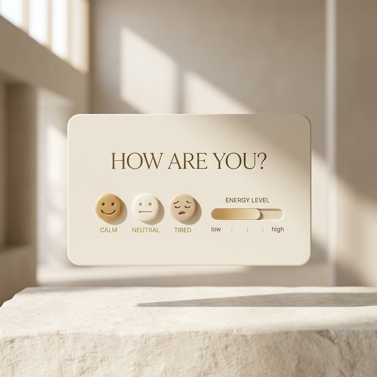
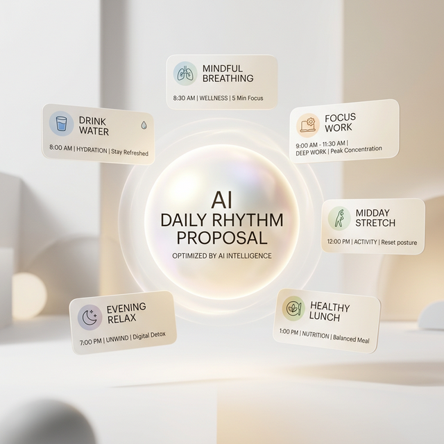
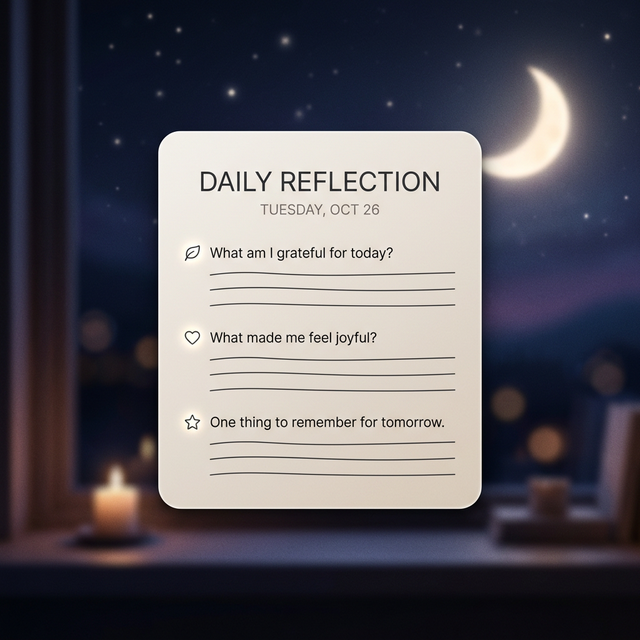

CHECK-IN
가장 나다운 시작,
가장 나다운 시작,
컨디션 체크인
억지로 끌어올리는 생산성이 아닌, 내 몸과 마음의 소리에 귀 기울이는 시간. 오늘의 에너지와 집중도를 파악해 무리 없는 걸음을 제안합니다.

오늘의 컨디션을 AI가 분석하고, 무리 없는 데일리 리듬을 제안합니다. 지속 가능한 시작을 위한 당신만의 리듬로그.
억지로 끌어올리는 생산성이 아닌, 내 몸과 마음의 소리에 귀 기울이는 시간. 오늘의 에너지와 집중도를 파악해 무리 없는 걸음을 제안합니다.

분석된 컨디션을 바탕으로 오늘 꼭 해야 할 일과 미뤄도 좋은 일을 AI가 구분해줍니다. 심리적 압박에서 벗어나 작은 성취감부터 시작해 보세요.

거창한 일기가 아니어도 좋습니다. 오늘 하루 가장 의미 있었던 순간을 3줄로 기록하며 내일의 나를 따뜻하게 맞이할 준비를 마칩니다.
